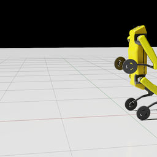
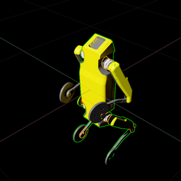

Wheeled quadruped robot — Deep-RL balancing in Isaac Lab
A wheeled quadruped — a four-legged robot whose feet are wheels — learns to stand upright and balance with Proximal Policy Optimization (PPO) in NVIDIA Isaac Lab. It is essentially a 3D inverted-pendulum problem: the policy actuates the robot’s rear wheels and front thighs to keep the torso near an upright target height, from proprioceptive feedback alone — trained across 4096 environments in parallel on the GPU.
View the code ↗ NVIDIA Isaac Lab ↗
Project goal
Teach a statically-unstable robot to keep itself standing. The wheeled quadruped has four legs tipped with wheels; left to itself it tips over. The control problem is a 3D inverted-pendulum / self-balancing task: hold the torso near an upright target base height of 0.828 m and don’t fall. It is framed as a Markov Decision Process and solved end-to-end with PPO — no hand-tuned balancing controller in the loop.
Two things make it a genuinely hard control problem rather than a toy. First, it is underactuated: the policy commands only four degrees of freedom — the two rear wheels and the two front thighs — yet must stabilise the whole articulated body. Second, it is proprioceptive-only continuous control: the policy never sees a camera image or an external tracking system; it reads just the torso’s own linear and angular velocity and the last command it issued, and outputs continuous joint targets every control step. Balance has to be inferred from the body’s own motion and corrected before the robot passes the point of no return.
From idea to simulation
The robot is described in src/robot_description/ as a ROS 2 (ament)
package — URDF/xacro parts for the base, the four thighs, the leg
joints, the shins, and the front and rear wheels, with DAE/STL meshes for the
geometry. That description is exported to a USD articulation
(quadruped_robot.usd) so it can be simulated in Isaac Sim /
Omniverse; every joint is prefixed robot1_*, and the RL task drives the two
rear wheels and the two front thighs. (This is an authored URDF → USD robot
description — there is no CAD/SolidWorks pipeline in the project.)
On top of that asset the project builds a custom task using Isaac Lab’s
manager-based RL environment API (a ManagerBasedRLEnvCfg that wires up the
scene, observations, actions, rewards, and terminations). The task is
registered as a Gymnasium environment,
gym.register("Custom-Wheeled-Quadruped-v0"), so it plugs straight into Isaac
Lab’s standard training workflows. Training runs across 4096 parallel
environments on the GPU — each on a ground plane with 4 m spacing under dome
and distant lighting — with physics stepping at 200 Hz
(dt = 0.005) and a decimation of 2, giving a 100 Hz
control rate. The task itself is adapted from Isaac Lab’s cartpole classic-task
template — a fitting lineage, since balancing a wheeled quadruped is a higher-dimensional
cousin of the classic cart-pole.
![Pipeline diagram: a ROS 2 URDF/xacro robot description with DAE/STL meshes is exported to a USD articulation; it becomes an Isaac Lab manager-based RL environment registered as the Gymnasium task Custom-Wheeled-Quadruped-v0; that runs across 4096 parallel environments on the GPU at 200 Hz physics and 100 Hz control; PPO trains the policy with actor/critic MLP [32,32] ELU using any of four RL-library configs (rsl_rl, rl_games, SB3, skrl); the output is a balancing policy that keeps the torso upright at a target height of about 0.83 m acting on rear wheels and front thighs. Observations are proprioception only: base linear and angular velocity plus the last action.](../assets/img/wquad-pipeline.png)
Implementation & architecture
A manager-based environment. Isaac Lab splits the task into composable managers, and this project uses them exactly as intended. The observation manager concatenates a compact 10-value proprioceptive state: the torso’s linear velocity (3), its angular velocity (3), and the previous action (4) — the last term letting the policy keep its commands smooth. There is deliberately no position, no orientation quaternion, and no exteroception in the observation; the policy must balance from body-frame velocities alone.
Four actuated joints, two control modes. The action manager
emits four continuous commands. The two rear wheels
(robot1_rl_wheel_joint, robot1_rr_wheel_joint) are driven in
joint-velocity mode — velocity-mode actuators with high damping and zero
stiffness — while the two front thighs (robot1_front_left_thigh_joint,
robot1_front_right_thigh_joint) are driven in joint-position mode with
stiff position actuators. That split — spin the wheels to catch the base, angle the front
thighs to shift the centre of mass — is the mechanical vocabulary the policy learns to balance
with.
The reward and termination managers define the task. The reward is intentionally
minimal: a constant +1.0 is_alive for every surviving step, a
+1.0 base_height_l2 term that pays out for staying at the
0.828 m target height (the actual balance objective), and a
−2.0 is_terminated penalty for falling. The termination manager
ends an episode on a 5 s time-out or on bad_orientation —
when the torso tilts more than π/3 (60°) from upright, i.e. the robot has
gone past recovery. “Balance” is thus encoded as: stay near the target height, stay
upright, stay alive.
The learner is compact PPO. Both actor and critic are small
MLPs with hidden layers [32, 32] and ELU activations — a tiny network
is enough because the observation is only ten numbers. Training (the rsl_rl config)
runs 150 iterations, each collecting 16 steps per
environment across all 4096 envs before updating over 5 learning
epochs in 4 mini-batches. Returns use discount
γ = 0.99 and GAE λ = 0.95;
the surrogate objective is clipped at 0.2 with an entropy bonus of
0.005 and a value-loss coefficient of 1.0; and the learning rate
is adaptive from 1e-3, targeting a desired KL of 0.01 so the
step size self-tunes to keep each update stable. The same task ships ready-made PPO configs for
four RL libraries — rsl_rl (default), rl_games, Stable-Baselines3, and skrl
— so switching backend is just a matter of pointing at a different workflow script.
![Architecture diagram. Top control loop: Isaac Sim physics with 4096 GPU envs at 200 Hz feeds a 10-value observation manager (base linear velocity, base angular velocity, previous action, proprioception only); the PPO policy (actor+critic MLP [32,32] ELU) maps 10 observations to 4 actions; the action manager sends rear wheels as joint velocity and front thighs as joint position back to the robot. Bottom band: the reward manager (is_alive +1, base_height_l2 +1 at target 0.828 m, is_terminated -2) and termination manager (time-out 5 s, bad_orientation beyond pi/3, tipped over) feed a combined reward-and-done signal to the PPO update (gamma 0.99, GAE lambda 0.95, clip 0.2, entropy 0.005, adaptive LR 1e-3, KL 0.01, 150 iters x 16 steps x 4096 envs), which sends updated policy weights back up to the policy. Four RL-library configs (rsl_rl default, rl_games, Stable-Baselines3, skrl) select the backend.](../assets/img/wquad-architecture.png)
Critical challenges
Balancing from velocities, with only four joints
The core difficulty is the control problem itself. With a ten-number, proprioception-only observation and four actuated joints, the policy has to stabilise an articulated, top-heavy body that will tip within a fraction of a second if it does nothing. The reward gives it very little to hold onto — essentially “survive, and be near the right height” — and the episode is cut the instant the torso passes 60° of tilt. Learning to coordinate wheel spin and thigh angle into a stable standing posture, from body-frame velocities alone, is precisely what makes this a real reinforcement-learning task rather than a scripted one.
Hard-coded, $HOME-relative asset paths
The project is honest about its rough edges. The robot’s USD is loaded by
absolute, $HOME-relative paths: the standalone demo
(create_wheeled_quadruped_env.py) loads it from
~/wheeled_quadruped_robot/…, while the registered task loads it from the
Isaac Lab install path it is copied into. In practice the repository has to be cloned
into $HOME and the USD placed just so, or the usd_path in the
configs edited by hand — a portability wrinkle the roadmap explicitly targets.
Template lineage and a duplicated source of truth
Because the task was scaffolded from Isaac Lab’s cartpole classic-task template,
some of that ancestry lingers — a leftover module docstring still reads
“Cartpole balancing environment.” More substantively, two copies of the
env config exist: a root-level wheeled_quadruped_env_cfg.py (standalone /
reference) and the package one that backs the registered task. They must be kept in sync by hand,
and de-duplicating them into a single source of truth is a named future task. None of this is hidden
— it is documented plainly in the README’s Notes & limitations.
Honest scope
This is a focused, single-task simulation project, not a polished product. Trained checkpoints are not committed — you run the training workflow to produce them — and the task, as published, stands and balances rather than driving to a goal. There is no hardware, and no sim-to-real claim is made. What the repository delivers is a clean, correct Isaac Lab task you can train yourself, with the scaffolding for four different RL backends already in place.
Results & analysis
What the repository demonstrates today are renders of the robot’s USD asset in Isaac Sim — the articulated platform loaded, posed, and set up for the balancing task. They show the robot the policy has to keep upright, and the articulation it has to do it with.


It is worth being precise about what is and isn’t shown. The README publishes these renders but no trained checkpoint, no training curves, and no success-rate metric — committing a trained policy plus a short demo clip is the first item on the roadmap. So the honest headline is a correctly-built, trainable balancing task: the robot loads and articulates in 4096 parallel environments, the reward and termination managers encode the upright objective, and PPO is wired up across four RL libraries — but the balanced-robot video and quantitative results are future work, not claimed here.
Future work
The roadmap the repository sets out:
- Commit a trained checkpoint and a short demo GIF/video of the balanced robot, so the result is reproducible and visible without training from scratch.
- Make the USD path configurable — a CLI argument or relative resolution
— instead of the current
$HOME-hardcoded paths. - Add velocity-command tracking so the robot can drive while balancing, not merely stand — turning a self-balancer into a controllable wheeled quadruped.
- Domain randomization (mass, friction, external pushes) for a more robust policy and a path toward sim-to-real transfer.
- Deduplicate the two env-config files into a single source of truth.
Built on NVIDIA Isaac Lab (BSD-3-Clause), with the task package adapted from Isaac
Lab’s cartpole classic task; the robot’s ROS 2 URDF/xacro description and
meshes live under src/robot_description/. Released under the MIT License.